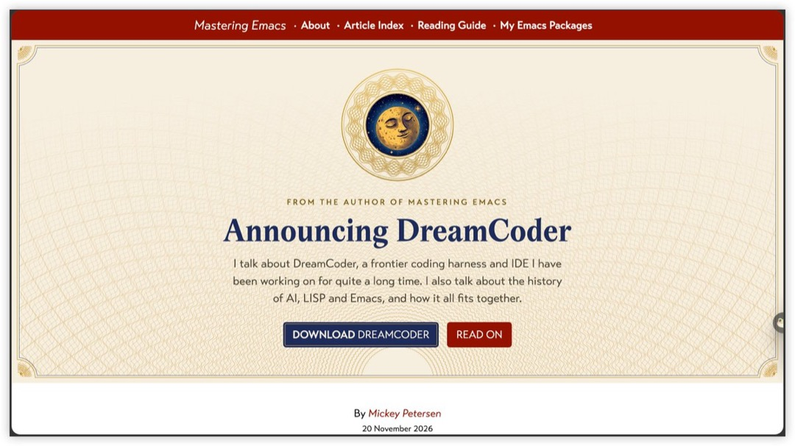
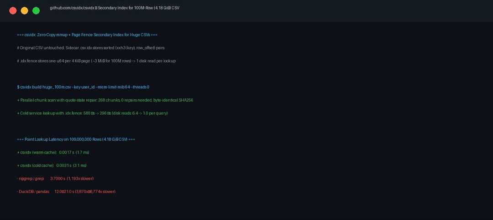
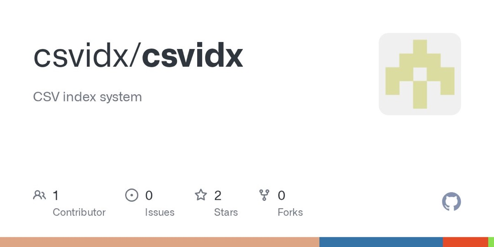

本期速览
01 DreamCoder 多Agent工作台
02 AGENTS.md 八条精简编码规则
03 46个编程skill同题实测排名
06 谷歌OKF统一AI业务知识格式
07 csvidx旁路索引秒查CSV
01｜DreamCoder 多Agent工作台
来源（X） · @xiaomovps · 2026-11-23 17:57
刚看了 Mario 推荐的文章，是 Mastering Emacs 作者闭关 15 个月做出来的 AI Coding Harness
发现大多数的 AI Coding harness 都是千篇一律的，但是这个 AI harness 还是特别有意思的，最简单的 它 UI 界面就非常有特色
我自己翻了一下内容，发现有几个设计确实戳中痛点了：
1、不再挤在终端里，也不做普通聊天框
作者直接吐槽，现在很多工具要么塞在窄终端里，要么 GUI 千篇一律左边列表右边对话框，DreamCoder 在浏览器里做了一套智能平铺窗口管理器，多个窗格会自动分配大小，放不下就收进隐藏栏，鼠标放上去就能实时预览
2、右上角状态小地图，专治多 Agent 并行乱套
平时开一堆 Agent 切来切去很容易乱，它给每个工作区配了个实时小地图，哪个窗格在干活会轻微闪烁，卡在权限审批会明显提示，跑完了直接变绿，一眼就能看清全部进度
3、Emacs 风格的纯键盘操作
内置命令面板和快速跳转，用 Alt+x、Alt+m 加 WASD 就能在各个窗格和工作区之间来回切，对话、终端、事件图谱和目标面板都能并排摆开，不用一直抓着鼠标点来点去
4、底层硬指标不错，还能一键导入 Pi 配置
用的是自研工具循环，作者介绍缓存命中率能到 99%，支持连续跑好几天，也能走 Docker 做沙箱隔离，而且直接支持一键导入 Pi、OpenCode 和 Codex 的配置，对 Qwen 3.8 27B、DeepSeek 这类本地开源模型也很友好
顺便提醒一句，作者在评论区说目前还不支持直连 Claude Code Max 订阅，主要还是走 API 或者本地模型，想试的朋友注意一下
全平台支持 macOS、Windows、Linux 和 Docker，看下来确实挺有下一代 IDE 的味道，我后面找时间装一个，把自己的 Pi 配置导进去实际跑一遍，好用的话再分享给大家


引用内容
Mario Zechner @badlogicgames
中文译文
@mickeynp 推荐的阅读材料。DreamCoder 中有很多很好的想法。
https://www.masteringemacs.org/article/announcing-dreamcoder
原文
recommended reading by @mickeynp. many nice ideas in dreamcoder.
https://www.masteringemacs.org/article/announcing-dreamcoder
02｜AGENTS.md 八条精简编码规则
来源（X） · @MuRong97358 · 2026-11-22 23:51
60B tokens 什么概念？换算成钱，差不多六位数美元。
这 8 条规则说白了就一句话：别让你的 AI 编程助手像个刚入行的实习生，什么都想自己造一遍；要让它像干了十年的老油条一样，写最少的、最能用的代码。
直接上规则：
1. 不保留向后兼容。过时的东西直接删，别加兼容层、别写迁移脚本、别留备用回退方案。
2. 选能满足当前需求的最简单实现。别搞预防性抽象，也别加那些“万一以后用得上”的配置层。
3. 系统要分层生长。先跑通一个最小的端到端版本，能跑了再往上加东西。绝对不要因为未来可能出现的复杂度，就去拆掉一个当前能正常工作的东西。
4. 组件保持模块化，关注点要分离清楚。
5. 优先用成熟的、有人维护的第三方库。没有特别硬的理由，别自己重写。
6. 动手之前，先翻翻项目里已经有的依赖能做什么，再决定要不要加新包或自己写。别想当然地觉得库里肯定没有。
7. 架构决策要往长远做。不接受“先凑合用，以后再说”这种临时方案。
8. 先看成熟产品是怎么解决同一个问题的，用已经被验证过的模式，别从零开始发明。
就这 8 条，丢进你项目根目录的 AGENTS.md 文件里，Cursor、Claude Code、Codex、Windsurf 这些工具都会自动读取。
为什么它能省 token？因为 AI 写代码最大的浪费，其实不是写错，而是反复写多余的东西。
它给你引三个依赖、搭五个抽象层，解决一个标准库十行就能搞定的事；你让它改，它又给你补两百行。这 8 条规则就是在它动笔之前把它摁住：能不写的不写，能复用的复用，能简单的别搞复杂。
代码短了，返工少了，token 自然就省了。
之前我推荐过的 Ponytail 那个插件，干的是同一件事，只不过它是在运行时强制检查；而这个是在 AGENTS.md 里从源头约束。两个一起用，效果拔群。
但作者自己加了个非常实在的警告：
这套规则只适合 side projects，生产环境慎用。
他亲口说过，“不保留向后兼容”那条，曾经让 Agent 差点删了生产数据库的表，差点损失 2000 美元的数据。生产环境你得自己改，至少把第一条删掉，或者改得温和一点。
所以，如果你在做 side project、内部工具、原型，把这 8 条抄进 AGENTS.md，你会发现 AI 写出来的代码突然像个人写的了。
如果你要用在生产环境，自己把握好第一条和第七条之间的度，别让 AI 把你的库表删了。
省 token 的方法有很多——换便宜模型是一种，写好 prompt 是一种，但最有效的，是在项目根目录放一个文件，告诉 AI：
别整花活，写最少的、能跑的代码。
03｜46个编程skill同题实测排名
来源（X） · @Tynric_carter · 2026-11-23 16:28
46 个候选，八个类目全部同题实测。这一篇多了个狠角色：不装任何 skill 的裸模型，每一类都进来同题跑，成绩直接排进榜里。
结果它三类进了顶级，写文档那一类直接登顶。很多 skill，打不过不装 skill。不服评论区见。 https://x.com/i/article/2124778551631298560
04｜Anthropic 驻场工程师课上线
来源（X） · @lxfater · 2026-11-24 01:30
但翻完课表才发现，前 9 门跟普通开发者课一样，值钱的反而是最后 2 门
这岗位英文叫 FDE，就是扎进客户现场、帮企业把 AI 用起来的人
前 9 门教用 Claude Code 写代码和接工具，属于基本功
多出来的 2 门才 100 分钟，却把写代码的和能落地交付的分开了
这 100 分钟到底教了什么？
交付课简介第一句就很直白，把技术跑通反而是容易的，决定成败的是技术外面的交付
翻完这两门大纲，就干三件事：
1. 先挑能算出硬账的活
别只做提速一点的小优化，官网举了个实在例子
原来 4 个人干 6 周，改成 2 个人 2 周干完，30 天拿出硬结果，老板才认账
2. 动手前先记好旧账
上线前原来花多久、错多少，必须先记下来当底数
没这笔旧账，跑完试点连省多少钱都说不清，客户凭啥继续掏钱？
3. 盯到人真用起来
很多 AI 项目黄了，是因为工具做好了、员工压根不用
课里教先圈小团队跑通，再带出内部骨干教别人，熬过刚上手变慢那段坎
看懂这三件事，往后该往哪使劲就清楚了！
AI 写代码越来越便宜，光按文档写功能越来越难卖上价
能把模糊需求算成清楚账目、带团队跑通落地，才算真本事，你说是不是？
但想学这套课的先别急，网上好多人说免费认证，点进去容易白跑一趟
完整驻场课和认证考试只对合作伙伴公司邮箱开放，个人报不了
不过里面有 8 门教模型、Claude Code 和接工具的课
在 Anthropic 公开学院能免费学，还给结课证书
完整 11 门课表和那 2 门交付大纲放下面，自己翻一眼就明白👇
https://anthropic-partners.skilljar.com/path/claude-fde
05｜Agent防护需代码层步数熔断
来源（X） · @zcswl7961 · 2026-11-23 09:15
我顺手问了他一个线上真实发生过的问题：“如果 Agent 在多轮工具调用时，因为外部接口返回的脏数据陷入了无限自我修正循环，你的架构在哪个层级能强制把它掐断？”
他想了半天，回答说“可以在 Prompt 里限制它最多思考三次，不要一直重试”。
听到这种答案基本就不用往下聊了。模型推理是概率性的，根本不会严格数自己思考了几轮；没有代码层的最大步数硬限制（Max Steps）、Token 预算熔断和状态检测，一个异常请求就能在几分钟内把整条队列和 API 额度全打爆。
你们团队现在面试 AI 工程师，还遇到过哪些“把工程防护全寄托在提示词上”的回答？
06｜谷歌OKF统一AI业务知识格式
来源（X） · @realchendahuang · 2026-11-23 13:39
写代码、做客服时，退款政策、业务口径这些规则都散落在文档和聊天记录里，OKF 把它们统一打包成标准文件，让人和不同的 AI 工具都能直接读懂。
它的原理就是普通的 Markdown 文件夹。每篇文档开头加几行标签，标清楚类型、来源、谁审过、什么时候过期；每个目录放一个 index.md 做索引，文档之间用链接串起来。
AI 查资料时先看目录，需要哪块再一层层往下翻，不用一次把所有文档都塞进上下文。算毛利、退款率这类指标，还可以直接绑上固定脚本，不让 AI 自己乱写 SQL。
有了统一格式，团队写一份知识库，编码 Agent、客服 Agent 和搜索引擎都能直接用，换工具也不用重新适配。
github：https://github.com/open-knowledge-format/open-knowledge-format
07｜csvidx旁路索引秒查CSV
来源（X） · @mylifcc · 2026-11-23 22:02
它的底层数据结构设计得非常克制。构建索引时，csvidx 扫描原文件并在旁侧生成按 xxh3 哈希排序的扁平二元组数组，每个条目只存哈希值与行字节偏移量。但如果直接对 1.5 GiB 的索引文件做 mmap 二分查找，每次查询大约会跨页触碰 20 个分散的 4 KiB 磁盘页。为了砍掉这笔随机 IO，作者没有上复杂的静态 B+ 树，而是额外生成了一个仅 3 MiB 的 .idx.fence 栅栏文件，记录每个 4 KiB 页的首个哈希值——查询时先在内存常驻的栅栏里二分定位，随后只需精准读取唯一命中的那 1 个磁盘页，直接把常驻服务的冷查询磁盘读取从 6.4 次压到了 1.0 次，延迟从 580 微秒腰斩到 296 微秒。
最见工程功底的是它的多核并行分块扫描算法。CSV 最恶心的地方在于双引号字段里允许包含换行符，后一个分块的引号开闭状态完全取决于前一个分块怎么结束。csvidx 让除首块外的所有线程先乐观假定第一个换行符就是记录边界并全速并行扫描，等前一块真正扫完后再核对边界状态；一旦发现恰好撞上跨块引号导致猜错，立刻触发局部顺序重扫修复（repair），从而在吃满多核带宽的同时，保证生成的索引与单线程顺序扫描逐字节 SHA-256 完全一致。在 1 亿行、4.18 GiB 的真实数据集上，相比 ripgrep 的 3.7 秒和 DuckDB 的十几秒，3 毫秒冷查且支持追加增量的旁路索引，简直是数据流水线上的瑞士军刀。

